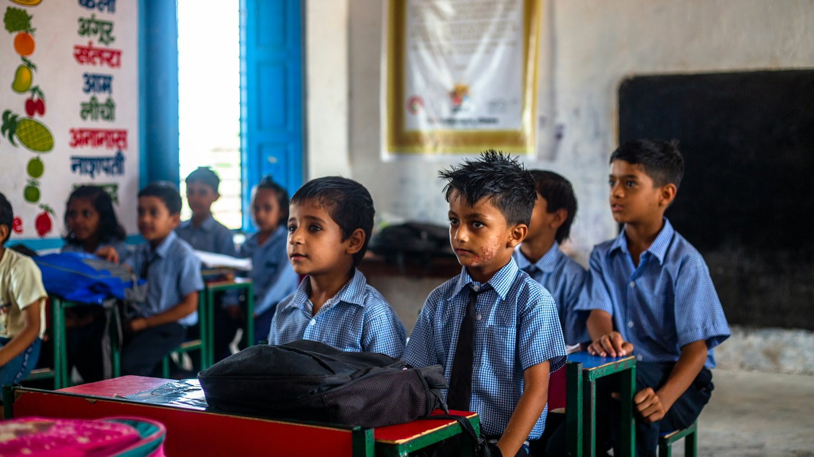
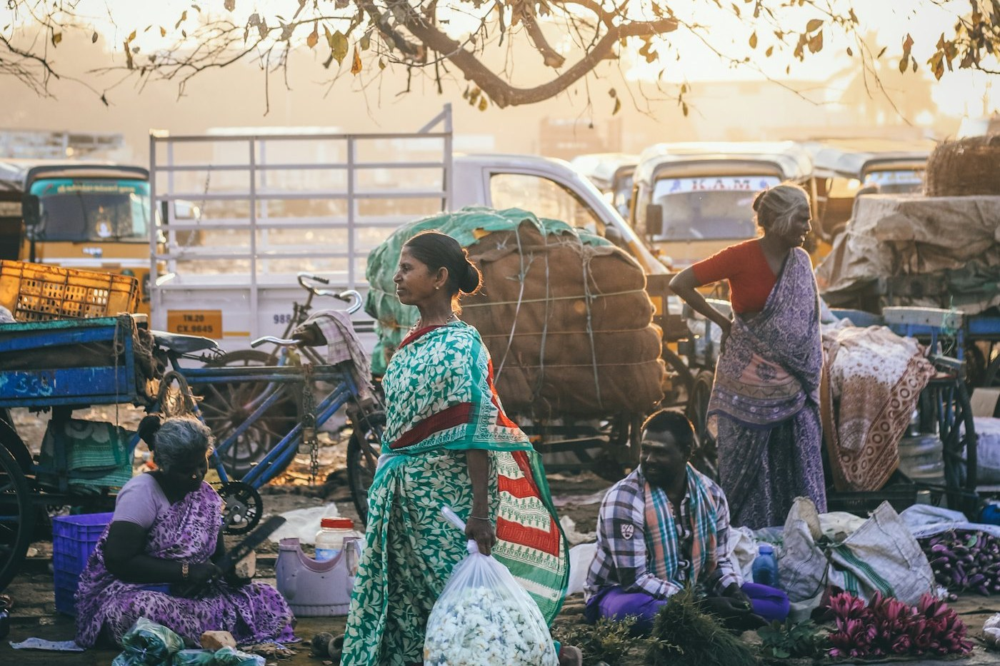
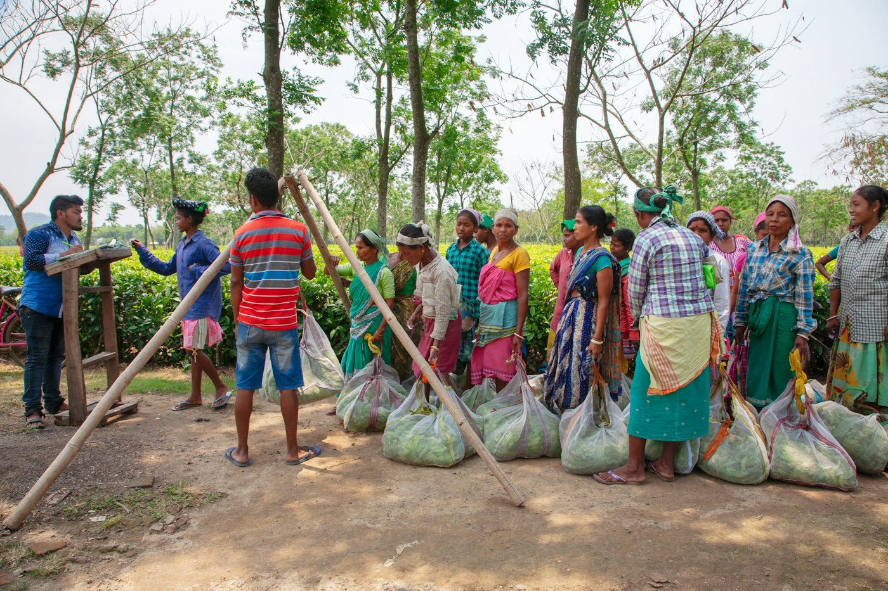

Community Awareness
Protecting People from Digital Scams
Awareness on never sharing OTPs, verifying emergency callers and building preparedness in local communities.
Read StoryLaxmi Surbhi NGO works across eight areas of social development — senior citizen care, education, women empowerment, health & wellness, skill development, youth development, environment and community awareness — serving people and communities of Jharkhand since 2007.



Laxmi Surbhi NGO is a registered non-governmental organisation (Registration Number: 690), established in 2007. We are a social development organisation working across multiple areas of community life — serving, empowering and uplifting individuals and communities through compassion, support and opportunity.

Every initiative begins with human warmth — standing beside people in their everyday lives, listening to them and treating every person with dignity and respect.

We work with families, volunteers, institutions and communities to build dependable support systems that reach people where they are.
Education, skills, health and awareness open doors. Our work aims to create opportunities that help people build a better tomorrow.
Our work is organised into eight areas, each receiving equal attention and importance. Senior Citizen Care is one of them — not the whole of who we are.

Companionship, well-being check-ins, health and social support that help senior citizens live with dignity and belonging.
Explore Area
Learning, educational access and educational awareness for children, students and communities.
Explore Area
Support, opportunity and development for women and girls, so that families and communities grow stronger.
Explore Area
Health, wellness, awareness and community health initiatives for people of all ages.
Explore Area
Vocational skills, training, livelihood development and capacity building.
Explore Area
Youth-focused development, learning, leadership and community participation.
Explore Area
Environmental awareness, sustainability, plantation and conservation.
Explore Area
Awareness campaigns, social awareness activities, community programmes and public participation.
Explore Area“To serve, empower and uplift individuals through compassion, support and opportunities for a just, inclusive and progressive society.”
Whatever the area of work, our approach stays the same: understand the need first, then respond with respect, responsibility and continuity.
We understand the situation, the people involved and the concerns they raise.
We learn about the family, social, health and practical realities behind each need.
We identify what kind of assistance or activity is appropriate and possible.
We connect people with the relevant support available through our work or partner network.
We do not want assistance to end after one interaction. We aim to build continuing relationships.
We publish only information that we can verify. Figures and achievements for each area of work will appear here as they are documented.
Serving communities in Jharkhand since 2007.
A registered non-governmental organisation.
Eight areas of social development work.
Chakradharpur and Jamshedpur, Jharkhand.
Selected initiatives currently documented. Projects across our other areas of work are added here as they are officially published.
Volunteer-driven home visits and companionship sessions, focused on conversation, spending meaningful time and listening.

Structured welfare check-ins through scheduled phone calls and authorised volunteer visits, with escalation to family contacts.

Step-by-step guidance on smartphones, messaging apps, digital payment awareness and booking online appointments.
Projects across education, women empowerment, health, skills, youth, environment and community awareness will be listed here from official documentation.
View All ProjectsReflections and updates from our work. Stories from women, youth, students, volunteers, families and communities will be published here as they are documented.
Awareness on never sharing OTPs, verifying emergency callers and building preparedness in local communities.
Read Story
How consistent conversation, friendly visits and genuine human presence uplift spirits and dignity.
Read Story
How our volunteers put ethics first — respecting boundaries, maintaining confidentiality and serving with humility.
Read StoryStories from women, youth, students, families, volunteers and communities are welcomed here.
Send Us a StoryOur strength comes from the collective contribution of every member, volunteer and supporter who believes that even a small effort can create meaningful change.
Give your time and care to any of our eight areas of work.
Join as a VolunteerSupport our mission with a documented contribution towards the work.
Support Our MissionInstitutions, professionals and organisations working on shared goals.
Discuss a PartnershipBack a specific campaign or drive from our areas of work.
See CampaignsWhether you are seeking support, looking for assistance for someone you care about, willing to volunteer, interested in collaboration, or simply want to support our mission — we would love to hear from you.
Chakradharpur & Jamshedpur, Jharkhand